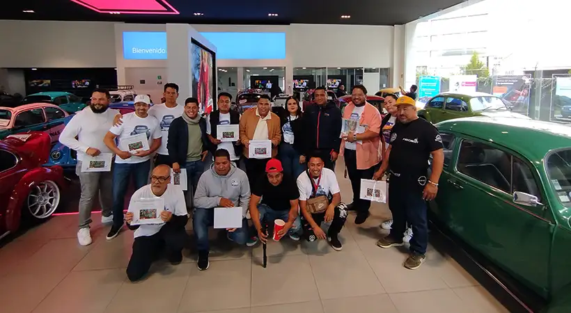

La marca Volkswagen en México celebra el Día Mundial del Vocho con el Vocho Fest 2025

Puebla, Puebla. Como cada año, el 22 de junio se celebra alrededor del mundo al emblemático auto clásico Volkswagen Sedán, conocido en México como Vocho. Este día fue establecido, porque el 22 de junio, pero de 1934, se firmó el contrato entre Ferdinand Porsche y la Asociación de la Industria Alemana del Automóvil, para establecer las bases del desarrollo de este vehículo conocido también como Volkswagen Beetle.
Años más tarde, en 1995, un grupo de apasionados coleccionistas tuvieron la iniciativa de reunirse para organizar una exhibición especial dedicada a este icónico automóvil. Desde entonces, con el paso de los años, el festejo ha adquirido relevancia uniendo a entusiastas por todo el mundo para honrar la historia y el legado del muy querido Vochito.
La marca Volkswagen promueve con entusiasmo el Día Mundial del Vocho, como una forma de mantener viva la tradición y el legado del primer automóvil de la marca y lo festeja con el Vocho Fest 2025, un espacio ideal para que los propietarios del icónico Sedán muestren sus autos, desde modelos clásicos restaurados, hasta personalizaciones únicas; y una gran oportunidad para que el público en general y todos los Volkswagen Lovers admiren la creatividad y dedicación de los entusiastas y se unan a este festejo lleno de historia, identidad y comunidad.
